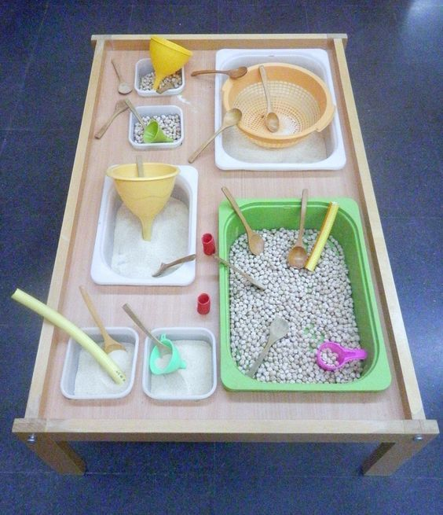
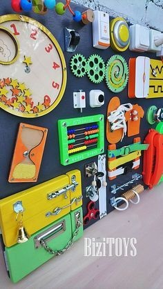
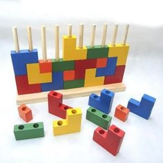

Mesa de Experimentação
Mesa de experimentação ou bandeja montessori para atividades sensoriais.
Facilita a realização de atividades sensoriais, estimulam a inteligência, ajudam na criatividade e propiciam uma aprendizagem ativa.
Saiba Mais

Painel Montessori
Painel sensorial Montessori para bebês e crianças.
O painel sensorial promove a interação através do tato. Para os bebês, o painel traz distintas texturas para que toquem e percebam suas diferenças.
Saiba Mais

Blocos de Encaixar
Os blocos de encaixar desenvolvem a agilidade de montagem sem ultrapassar as bases e a colaboração.
Estimulam a coordenação motora e desenvolvem a percepção espacial e conhecimento de cores e formas.
Saiba Mais